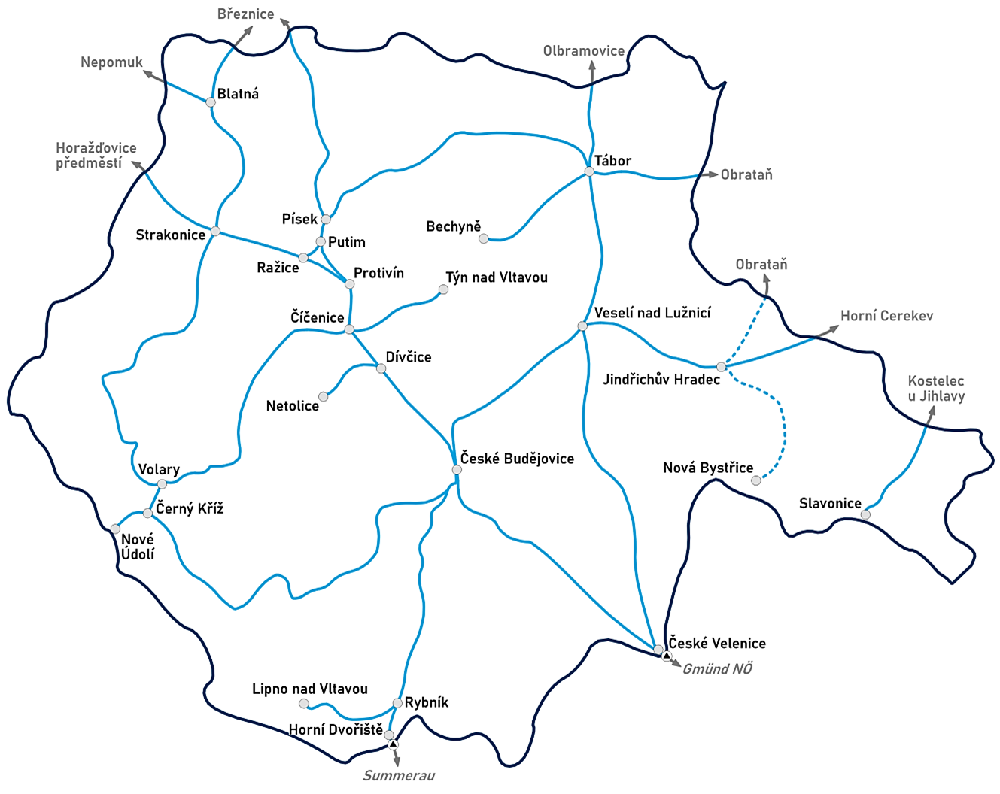

Jihočeský kraj zaujímá strategickou polohu na ose sever-jih, přesto patří kvůli špatné a horší udržovanosti kvalitě doprava mezi jeho slabší stránky
Nachází se zde dálnice D3 a mezinárodní silnice I/3, I/19, I/20, I/24, I/34
V roce 2025 byla na dálnici D3 dočasně povolena rycklost 150km/h
Krajem prochází ve IV. železniční koridor z Prahy do Rakouska, který je nejmodernější v Česku
Vodní doprava na nádrži Lipno, na Vltavě mezi Týnem nad Vltavou a Orlíkem a na rybníku Svět
Je zde bohatá síť cyklostezek a turistických tras
V úsecích Votice - Sudoměřice u Tábora a Doubí u Tábora - Soběslav mohou vlaky jezdit rychlostí až 200 km/h
